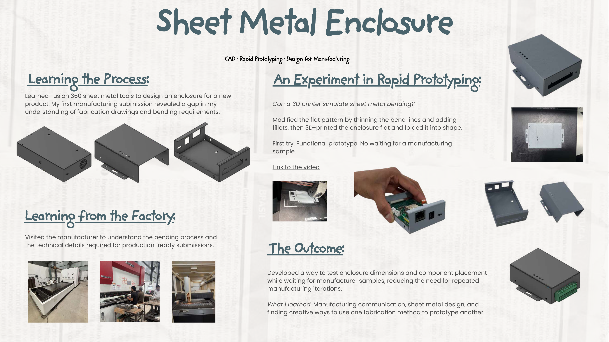
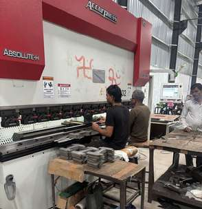
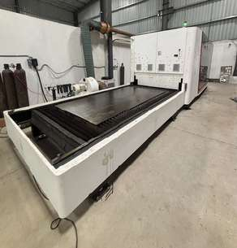
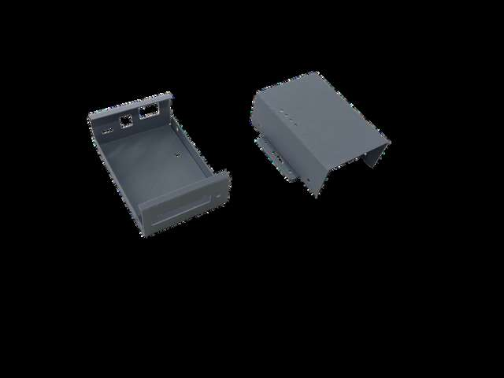
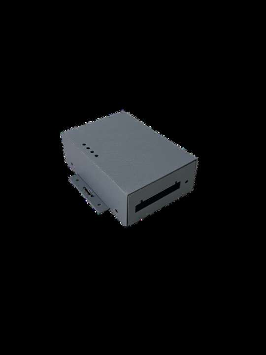

SHEET METAL ENCLOSURE
Bridging the gap between sheet metal manufacturing and rapid 3D printing by inventing a flat-print folding technique.

LEARNING THE PROCESS & FACTORY VISIT
Learned Fusion 360 sheet metal tools to design an enclosure for a new product. My first manufacturing submission revealed a gap in my understanding of fabrication drawings, bend allowances, and brake press tooling.
Rather than iterating over email, I visited the manufacturer in person to understand the bending process, see the press brake tooling firsthand, and master the technical details required for production-ready engineering drawings.
ACTUAL PROTOTYPE & FACTORY FLOOR




AN EXPERIMENT IN RAPID PROTOTYPING
THE HYPOTHESIS
Can a 3D printer simulate sheet metal bending? Instead of waiting weeks for manufacturer samples or spending days printing bulky support-heavy volumes, could the flat sheet metal DXF be printed directly flat and folded?
THE EXECUTION
Modified the flat pattern in CAD by thinning the bend lines to create living hinge grooves and adding stress-relief fillets. 3D-printed the enclosure entirely flat in under 2 hours, then folded it into shape by hand.
THE RESULT
First try. Functional prototype. No waiting for a manufacturing sample.
Developed a reliable method to test enclosure dimensions, internal clearances, and component placement while waiting for manufacturer samples, reducing the need for repeated manufacturing iterations.
"What I learned: Manufacturing communication, sheet metal design, and finding creative ways to use one fabrication method to prototype another."